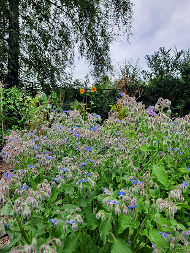
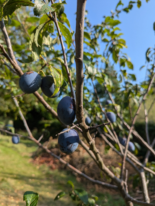
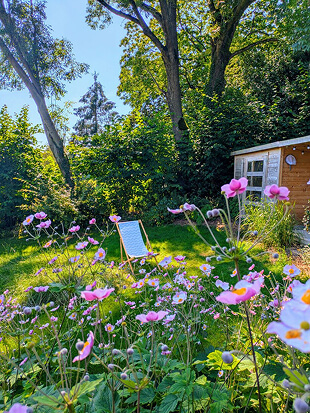
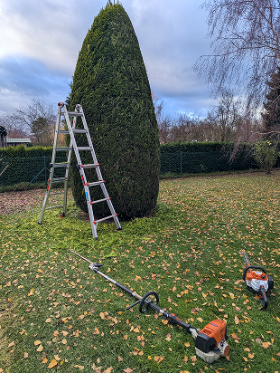
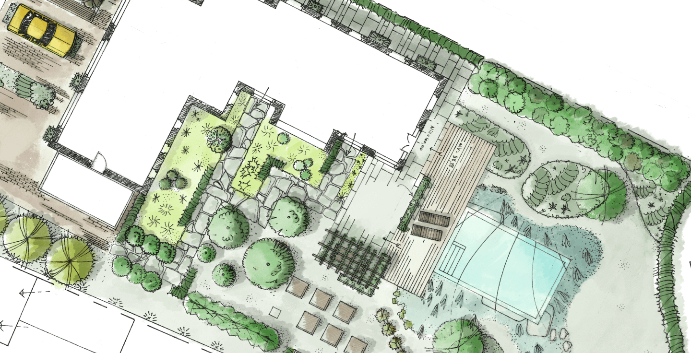

Contactez-moi notamment pour ces travaux
Entretien
- Taille de haies
- Rabattage
- Taille d’arbustes
- Taille de fruitiers
- Taille douce
- Petit élagage
- Tonte
- Désherbage
- Débroussaillage
- Remise en état
- Nettoyage de terrasse
Aménagement
- Bordures
- Murets en pierre sèche
- Plantation
- Chemins
- Structures en acier
Paysagisme
- Conseils
- Plans paysagers
- Proposition d’aménagements
- Choix de plantations
Besoin d’autre chose ? Je travaille en collaboration avec d’autres entrepreneurs de jardins pour certains projets. Bois de chauffage, abattage, clôtures ou autre, n’hésitez pas à m’en faire part.




Des services de jardinage spécifiques

J'entretiens tout type de jardin et j'ai un attrait particulier pour l'éco-jardinage et la préservation de la biodiversité au jardin. Si vous êtes curieux ou avez un intérêt pour les jardins plus sauvages, je peux vous conseiller sur les différents aménagements alternatifs possibles.
Entretien, aménagement
Tonte, taille, débroussaillage. Tout ce qui concerne les entretiens “classiques” de jardin. Taille de haies, d'arbustes ou d'arbres, tonte régulière, débroussaillage, nettoyage de massifs, soufflage, plantation, etc.
Taille fruitière
Taille de tout type d'arbre fruitier. De quoi limiter les maladies, assurer une bonne conduite de l'arbre et avoir une bonne production fruitière sur la durée. Je pratique la taille douce, de formation pour les jeunes arbres, d'entretien ou taille d'arbres plus anciens.
Conseil, aménagements favorables à la biodiversité
Il existe tout type de pratiques qui peuvent rendre votre jardin plus accueillant pour la faune et la flore de votre région. Cela concerne, entre autres, la gestion différenciée, lutte intégrée, alternatives aux pesticides, favoriser les plantes locales, utiliser des matériaux locaux ou durables, ou des aménagements qui permettent à la biodiversité de se nourrir ou de loger, etc. Ce qui est possible dépendra de votre jardin, de vous et de votre environnement. Tout cela est possible sans mettre de côté l'aspect pratique et esthétique. Pour en savoir plus: Adalia ➚
Taille douce et taille raisonnée
Taille d'arbustes d'ornement en suivant leur croissance naturelle. Un noisetier et un camélia ne poussent pas de la même façon. C'est une taille qui s'oppose souvent à former des "boules" pour tout les types d'arbustes. Elle permet notamment une meilleure mise en valeur des branches ou une meilleure production de fleurs.
À propos
Tout jeune, j'entretenais et travaillais au jardin ou au potager. J'ai petit à petit construit un intérêt plus spécifique pour les jardins naturels, la taille, la conception de jardins et d'autres aspects liés à l'environnement.
Sans totalement délaisser mon premier métier — la création de sites web — j'ai décidé d'en faire mon métier principal depuis 2021.
Je ne peux que vous recommander ces professionnels chez qui j'ai appris et oeuvré → Ecosem (pépinière de plantes sauvages à Louvain-La-Neuve), Empreinte Nature (créatrice de jardins écologiques dans le Brabant Wallon), Guillaume Massillon (Entrepreneur de jardins à Huy).
Je suis toujours en quête de nouvelles formations → Pas à Pas, IFAPME Entrepreneur et créateur d'espaces verts. C'est en cours chez Natagora (Biodiversité en espaces verts) et encore à venir chez Adalia